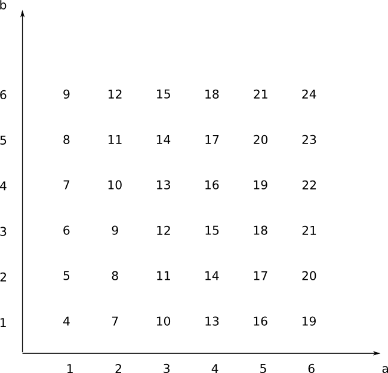

1. Begrepp
I sannolikhet talar vi om utfall, saker som sker. Vi delar in den i sådana som vi vill att skall ske, gynnsamma utfall, och totala utfall.
Om vi har två svarta och tre vita kulor i en urna och drar slumpmässigt en kula är sannolikheten för att få en svart \( \dfrac{\textrm{gynnsamma}}{\textrm{totala utfall}}=\dfrac{2}{5} = 0,40 \). För de vita gäller igen \( \dfrac{\textrm{gynnsamma}}{\textrm{totala utfall}}=\dfrac{3}{5} = 0,60 \).
Vi kan antingen tala om sannolikheten som \( \dfrac{2}{5} \), av fem kulor är två svarta, eller som \( 0,40 \), av 100 kulor är 40 svarta.
Vi märker att summan av sannolikheterna är ett, \( 0,40 + 0,60 =1,00 \). Sannolikheten för en händelse rör sig mellan noll och ett. Är sannolikheten lika med noll kommer den inte att ske och är sannolikheten ett kommer den med säkerhet att ske.
Vi talar om att sannolikheten och komplementet för sannolikheten alltid har summan 1.
Exempel 1 Vi singlar slant tre gånger. Bestäm sannolikheten att vi
- får två gånger klave,
- får högst två gånger klave.
Lösning
Det är ingen skillnad om vi singlar tre slantar samtidigt eller om vi signar en slant tre gånger efter varann. Vi tar och skriver upp alla möjliga fall i en tabell.
| Kast 1 | Kast 2 | Kast 3 | |
|---|---|---|---|
| 3 gånger klave | klave | klave | klave |
| 2 gånger klave | klave | klave | krona |
| klave | krona | klave | |
| krona | klave | klave | |
| 1 gång klave | klave | krona | krona |
| krona | klave | krona | |
| krona | krona | klave | |
| ingen klave | krona | krona | krona |
Vi märker att vi kan få två stycken klavar på tre olika sätt. Totalt finns det åtta fall, sannolikheten för två gånger klave \( \dfrac{3}{8} \).
Om vi skall ha högst två stycken klavar skall vi ha noll, ett eller två stycken. Vi har totalt 1 + 3 + 3 olika sätt och sannolikheten är \( \dfrac{1+3+3}{8} =\dfrac{7}{8} \).
Vi kan också arbeta med komplementsannolikheten, det att vi skall ha mer än tre stycken klavar. Sannolikheten för tre klavar är \( \dfrac{1}{8} \) och vi vill ha komplementet för det, \( 1-\dfrac{1}{8}=\dfrac{7}{8} \).
Exempel 2 Koefficienterna för ett polynom av första graden, \( f(x)=ax+b \), bestäms med tärning. Bestäm sannolikheten att
- \( f(3)=12 \)
- \( f(3) < 12 \)
Lösning
\( f(3)=12 \) betyder för vår del att \( f(3)=a\cdot 3 + b = 12 \). Vi bildar en tabell över olika värden som tärningarna ger vår funktion.

Vi har två fall som ger summan 12. Sannolikheten är \( \dfrac{2}{36} = 0,06 \).

För mindre än 12 har vi 13 fall. Sannolikheten är \( \dfrac{13}{36}=0,36 \).
Uppgifter
- Vi kastar en vanlig sexsidig tärning. Kryssa för rätt uttryck med rätt sannolikhet.
Påstående 1/6 2/6 3/6 4/6 5/6 6/6 Sannolikheten att få en trea är Sannolikheten att få ett jämt tal är Sannolikheten att få en femma är Sannolikheten att få ett tal som är mindre än tre är Sannolikheten att få ett tal som är större eller lika med fyra är Påstående 1/6 2/6 3/6 4/6 5/6 6/6 Sannolikheten att få en trea är Sannolikheten att få ett jämt tal är Sannolikheten att få en femma är Sannolikheten att få ett tal som är mindre än tre är Sannolikheten att få ett tal som är större eller lika med fyra är - I en urna finns 10 klot. 4 är svarta, 2 är vita och resten är röda. Bestäm sannolikheten, som decimaltal, för att vi slumpmässigt drar en kula som är
- svart
\( P(\text{Svart})= \dfrac{4}{10} = 0,40 \).
- röd
Antal röda är 4 st.
\( P(\text{Röd})= \dfrac{4}{10} = 0,40 \).
- svart eller vit
Totalt finns det 4+2 svarta eller vita kulor.
\( P(\text{Svart eller vit})= \dfrac{4+2}{10} = 0,60 \).
- inte vit
8 kulor är inte vita.
\( P(\text{Inte vit})= \dfrac{4+4}{10} = 0,80 \) eller som \( P(\text{Inte vit})= 1-\dfrac{2}{10} = 0,80 \).
- svart
- Bestäm sannolikheten för händelserna då vi drar ett kort ur en normal kortpacke. Vi låter esset ha värdet 1.
- Att kortet är spader.
\( P(\text{Spader})= \dfrac{13}{52} = 0,25 \).
- Att valören är mindre än 5.
Per färg finns det 4 kort vars valör är mindre än 5; ess, 1, 2, 3 och 4. Totalt finns det fyra färger.
\( P(\text{Valören mindre än 5})= \dfrac{4\cdot 4}{52} = 0,3077 \approx 0,31 \).
- Att valören är antingen 7 eller 9.
Per färg finns det två kort. Totalt har vi fyra färger.
\( P(\text{7 eller 9})= \dfrac{2\cdot 4}{52} = 0,1538 \approx 0,15 \).
- Att valören är 5 eller högre.
Per färg finns det 9 kort: 5, 6, 7, 8, 9, 10, knekt, dam, kung. Totalt finns det 4 färger.
\( P(\text{5 eller högre})= \dfrac{9\cdot 4}{52} = 0,6923 \approx 0,69 \).
- Att kortet är spader.
- Vi singlar slant en gång. Vilken är sannolikheten att vi får krona? Vilka av följande påståenden gäller?
Påstående Sant Falskt När vi singlar slant så är var annat kast krona. Då vi singlar slant två gånger får vi i en av kasten en krona. Då vi singlar slant 100 gånger får vi 50 kronor. Då vi singlar slant 100 gånger är ca 50 % av fallen kronor. Påstående Sant Falskt När vi singlar slant så är var annat kast krona. Då vi singlar slant två gånger får vi i en av kasten en krona. Då vi singlar slant 100 gånger får vi 50 kronor. Då vi singlar slant 100 gånger är ca 50 % av fallen kronor. - I en undersökning om vad de gör på sin fritid svarade 299 gymnaster som följande: 102 idrottar, 89 musicerar och 108 idrottar och musicerar.
- Hur många idrottar på sin fritid?
102 idrottar + 108 idrottar och mucicerar = 210 som idrottar.
- Hur många håller på med musik på sin fritid?
89 musicerar och 108 musicerar och idrottar = 197 musicerar.
- Deluppgit c
Lösningen
- Hur många idrottar på sin fritid?
- Koefficienterna för ett polynom av första graden, \( f(x)=ax+b \), bestäms med tärning. Bestäm följande sannolikheter.
Tänk efter och rita tabell över värden som funktionen kan få.
- \( f(-1)=2 \)
Eftersom \( f(-1)=2 \) får vi att \( a(-1)+b=2 \). Vi får följande tabell
\( \begin{array}{c|ccccccc} b & \\ 6 & 5 & 4 & 3 & 2 & 1 & 0 \\ 5 & 4 & 3 & 2 & 1 & 0 & -1\\ 4 & 3 & 2 & 1 & 0 & -1 & -2\\ 3 & 2 & 1 & 0 & -1 & -2 & -3\\ 2 & 1 & 0 & -1 & -2 & -3 & -4\\ 1 & 0 & -1 & -2 & -3 & -4 & -5 \\ \hline & 1& 2& 3 & 4 & 5 & 6 & a\\ \end{array} \)
Vi får \( P(f(-1)=2)= \dfrac{4}{36} = 0,1111\ldots \approx 0,11 \).
- \( f(-1)>2 \)
Vi har samma tabell som ovan.
\( P(f(-1)>2 ) =\dfrac{6}{36} = 0,1666\ldots \approx 0,17 \).
- \( f(-1)=2 \)
- Koefficienterna för ekvationen för linjen \( ax+by=4 \) lottas med tärning. Bestäm sannolikheten att linjen går genom punkten \( (1,1) \).
Eftersom linjen skall gå genom punkten \( (1,1) \) gäller att \( a\cdot 1 + b\cdot 1 = 4 \)
Vi skapar en tabell
\( \begin{array}{c|ccccccc} b \\ 6 & 7 & 8 & 9 & 10 & 11 & 12 \\ 5 & 6 & 7 & 8 & 9 & 10 & 11 \\ 4 & 5 & 6 & 7 & 8 & 9 & 10 \\ 3 &4 & 5 & 6 & 7 & 8 & 9 \\ 2 & 3 &4 & 5 & 6 & 7 & 8 \\ 1 & 2 & 3 &4 & 5 & 6 & 7 \\ \hline & 1 & 2 & 3 & 4 & 5 & 6 & a \end{array} \)
Vi har 3 st talpar som bildar summan 4. Sannolikheten är \( P(\text{Genom punkten (1,1)}) =\dfrac{3}{36} = 0,0833\ldots \approx 0,08 \).